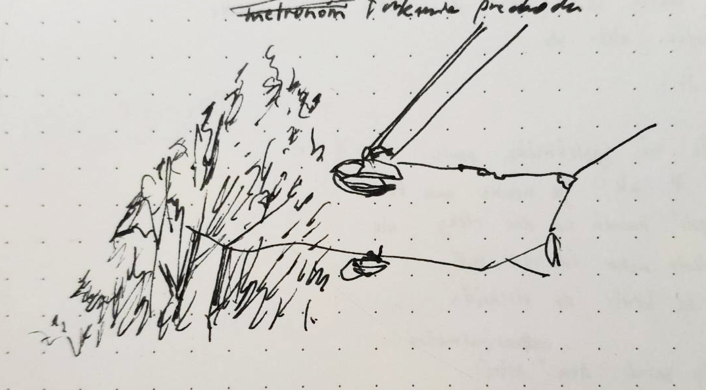

16.6.2023
Si muž s trojštvrťákmi vyholenou hlavou
ale štýlovými fúzikmi
páli slnko ale také stredo-júnové stredo-európske
Tvoj stride je taký, že ideš telom vpred chápeš
z profilu povedané : konvexne
vznešene sa nesieš bruchom vpred a
tá fľaša s pivom ti robí metronóm
Ja sedím v zelenej plastovej stoličke celá nerozhodná
Kebyže robím, to čo chcem nebudem tým kým chcem
Sadnem si tak, že cez pol stola svieti slnko
ajkeď neviem do ktorej strany sa pohne ďalej
V Rakúsku radi hovoria "Perfekt" namiesto "Dobre"
Zvykla som si tváriť sa, že je dobre, samej sebe
Ale je mi vtedy horšie alebo nie
neviem ako mi je.
Páli slnko, také že mi spolužiačka povie UV 7
neviem čo je UV 7 ale nehme ma to
Neviem, čo si myslí kameň na dne rieky ale
asi cíti ako okolo neho ide tá suť
a cez to všetko sa brúsi do ploskáča
Možno do seba niekedy zatnú dva výnimočne ostré
A tá hlboká ryha tam na tele sedí kým okolo do seba ďalej
búchajú kamene. Ten zvuk je hrozne úžasný ako úžasná hroznota
Trvá tak krátko a hneď ho zabudneš ale keď si ho ideš vybaviť
trocha ťa vnútri mykne
Quantová geológia si na to musí vymyslieť nový model
ale vec sa má tak, že keď sa ďalej mele suťou ajkeď
mu teraz v boku zýva prázdna ryha
človeka to utvrdí a ten kameň klesá ku dnu
Snaha asi nie je márna, ale neviem na čo je dobrá
nerada sa snažím, radšej sa pozerám
Niekto si pri mne zapáli cigu
Celý čas sa na tú osobu snažím nepozerať
pretože ma zaujíma
Ale obecná mi na röntgene zbadala zlé plúca
Môžem sa snáď pozrieť na toho kto ma zabije
A iny z toho tyzdna:
denne
človeka, ktorého nestrasieš
a slnko pečie
samota zýva do ulice
v poslednom oranžovom slnku dňa
reťazový fajčiar na vedľajšom stole
čakám ťa na semafóroch
sandále mám na horúcom betóne
a stredová tyč sa mi opiera o stehno
nikdy som o tom nepočula, ale je mi jasné
že sa to tu musí volať Nordbahnhof
ten 4-poschodový meštiansky dom, ktorý sa do
strany končí úplne rovno
na tej križovatke je úplne ticho
do tej farby júnového tepla sa ozýva
ťukanie prechodu
